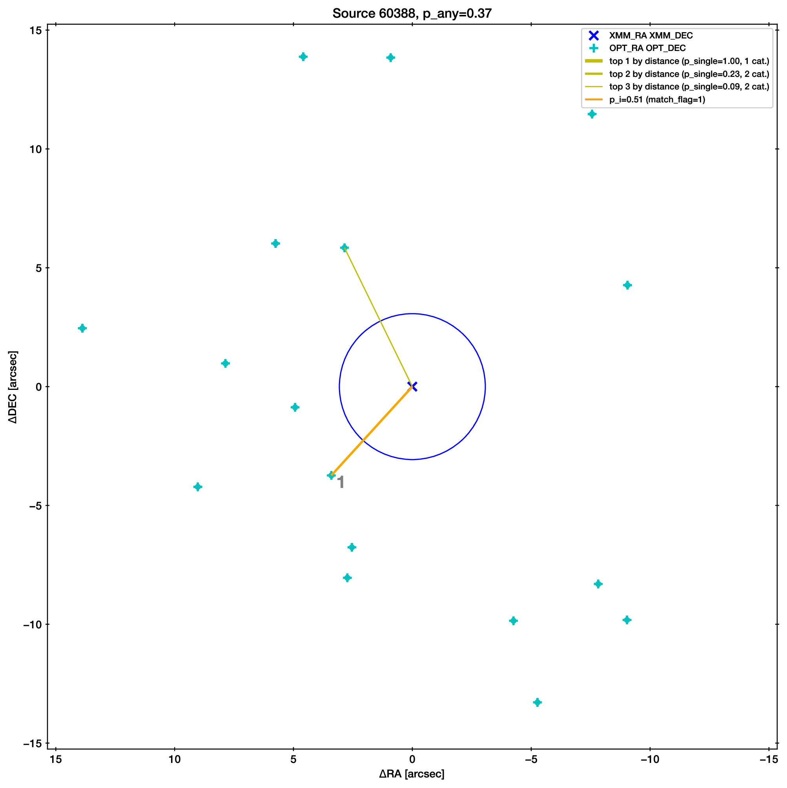

User guide: Matching catalogs#
To achieve reliable results, we recommend that you run matching with increasing amount of information (first distance-based matching <chap:distance-based-matching>) then adding priors on source properties and understand how each influences the results.
Typically, the goal is a compilation of “best matches”, i.e. choosing
one reliable counterpart for each source. Whatever method used, there
are always false selection fractions and false non-selection fractions
in play, which should be characterized. To this end, we recommend to
shift the source catalogues by a distance much larger than the
positional errors to simulate the results for chance alignment. This
fake catalogue should not coincide with original positions (tool
nway-create-fake-catalogue.py may help). For the matching run with
this fake catalogue, use Nway with the same settings and from the
output, choose cut-off limits (p_any) that correspond to the desired
false selection fraction (tool nway-calibrate-cutoff.py may help).
The output of your first Nway run advises how to use these tools to
characterise false selection rates and to find an appropriate p_any
threshold.
Then the Nway output on the real data can be truncated based on this
criterion (p_any>cutoff), and made into a best match catalogue
(match_flag==1). It may be worth noting ambiguous cases with
multiple solutions and to store these secondary solutions with similar
probabilities in another catalogue (match_flag==2).
Simple distance-based matching#
Before exploring the full power of Nway, we consider a simple, illustrative case. We have three catalogues, provided as FITS files:
Input:
1-1 Primary Catalogue |
2nd Catalogue |
3rd Catalogue |
|---|---|---|
1-1 A |
\(\alpha\) |
\(\mathbb{A}\) |
B |
\(\beta\) |
\(\mathbb{B}\) |
… |
… |
… |
Output:
Primary Catalogue Entry |
2nd Catalogue Entry |
3rd Catalogue Entry |
Probability |
Group |
|---|---|---|---|---|
A |
\(\alpha\) |
\(\mathbb{A}\) |
… |
A group |
A |
\(\alpha\) |
\(\mathbb{B}\) |
… |
|
A |
\(\alpha\) |
(none) |
… |
|
A |
\(\beta\) |
\(\mathbb{A}\) |
… |
|
A |
\(\beta\) |
\(\mathbb{B}\) |
… |
|
A |
\(\beta\) |
(none) |
… |
|
A |
(none) |
\(\mathbb{A}\) |
… |
|
A |
(none) |
\(\mathbb{B}\) |
… |
|
A |
(none) |
(none) |
… |
|
B |
… |
… |
… |
B group |
In Nway, only the first catalogue (the primary catalogue) plays a special role. For each entry of it, counterparts are sought from the other catalogues.
Example - Preparing input files
Note these points about preparing a catalogue input file:
- Each catalogue needs to be a FITS file. The second extension should be the table (first extension is a header). TOPCAT writes files in this way.
Three example catalogues are provided for you in the
doc/directory: COSMOS_IRAC.fits, COSMOS_OPTICAL.fits and COSMOS_XMM.fits. These are the same files as in Appendix B of Salvato et al. [SalvatoBuchnerBudavari+18], extracted from Sanders et al. [SandersSalvatoAussel+07]/McCracken et al. [McCrackenPeacockGuzzo+07], Ilbert et al. [IlbertSalvatoLeFloch+10] and Brusa et al. [BrusaCivanoComastri+10] respectively. - The data table needs to have a extension name and the keyword SKYAREA. The extension name is used as a prefix as all columns are copied to the output catalogue. The SKYAREA keyword tells the area on the sky in square degrees covered by the catalogue. This is important for estimating the chance of random alignments. You can use the tool
python nway-write-header.py mycat.fits mytablename myskyareato set the fits header.For our example files we have a optical, IRAC and XMM catalogue covering 2 square degrees:python nway-write-header.py COSMOS_OPTICAL.fits OPT 2python nway-write-header.py COSMOS_IRAC.fits IRAC 2python nway-write-header.py COSMOS_XMM.fits XMM 2 Each catalogue needs to have a column RA and DEC providing the coordinates in degrees. To make your life easier, Nway tries to be a bit fuzzy and detect the columns named RA_something etc. It will print out which columns it found and used.
The primary catalogue needs to have a ID column. In our example this is the X-ray catalogue. To make your life easier, Nwaytries to be a bit fuzzy and detect the columns named ID_something etc. It will print out which columns it found and used.
Otherwise the file can have arbitrary columns which are copied over to the output file.
Every possible combination of association is considered. However, in
practice you do not want an extremely large output catalogue with
extremely distant, unlikely to be physically associated. You can set the
largest distance in degrees to consider by setting --radius. This
speeds up the computation. But use a value that is much larger than the
largest positional error.
Example - Matching two catalogues
Lets try the simplest example and match the XMM X-ray catalogue to an optical catalogue. The XMM catalogue has a pos_err column with the positional error in arcseconds. For the optical catalogue we will assume a fixed error of 0.1 arcseconds.
Run this command in the doc/ folder:
python ../nway.py COSMOS_XMM.fits :pos_err COSMOS_OPTICAL.fits 0.1 --out=example1.fits --radius 15 --prior-completeness 0.9
Lets understand what we put in:
We passed two catalogue files: COSMOS_XMM.fits and COSMOS_OPTICAL.fits. For the first one, we told Nwayto use the column (“:”)
pos_errin that catalogue for the positional error (always in arcsec). For the second one we specified a fixed error of 0.1 arcsec.We specified where the output should be written (
--out).The largest XMM error is 7.3 arcsec, so we adopt a cropping radius of 15 arcsec to speed up the matching (
--radius 15). A larger radius produces a more complete catalogue. For dense catalogues larger radii can be much slower to compute, as the number of combinations to consider rises exponentially.The parameter
--prior-completeness 0.9is mentioned below.
Lets understand what Nway did:
NWAY arguments: catalogues: COSMOS_XMM.fits, COSMOS_OPTICAL.fits position errors/columns: :pos_err, 0.1 from catalogue "XMM" (1797), density is 3.706579e+07 from catalogue "OPT" (560536), density is 1.156188e+10 magnitude columns:
It reads the catalogues and looks at their densities.
matching with 15.000000 arcsec radius matching: 1007283192 naive possibilities matching: hashing using RA columns: RA, RA using DEC columns: DEC, DEC matching: healpix hashing on pixel resolution ~ 18.036304 arcsec (nside=8192) 100% | 562333|############################################|Time: 0:00:13 matching: collecting from 61787 buckets, creating cartesian products ... 100%|61787|###############################################|Time: 0:00:02 matching: 462267 unique matches from cartesian product. sorting ... merging in 10 columns from input catalogues ... 100% 10|##################################################|Time: 0:00:00 adding angular separation columns matching: 22435 matches after filtering by search radius
Within 20 seconds it created a cross-match of remotely possible associations (1,007,283,192 in principle, 22,435 within 15 arcseconds).
It found ID, RA, DEC, and positional error columns.
Computing distance-based probabilities ... finding position error columns ... Position error for "XMM": found column XMM_pos_err: Values are [0.109000..7.301000] Position error for "OPT": using fixed value 0.100000 finding position columns ... building primary_id index ... computing probabilities ... correcting for unrelated associations ... not necessary Computing final probabilities ... grouping by column "XMM_ID" and flagging ... 100%| 1797|###################################|Time: 0:00:00
It computed the probability of each association.
creating output FITS file ... writing "example1.fits" (37836 rows, 17 columns)
It wrote the output file
example1.fits. This file contains all columns from the input catalogues and the computed probabilities (see below for their meaning).
So how does Nway deal with a particular, possible association and compute its probability?
The probability of a given association is computed by comparing the probability of a random chance alignment of unrelated sources (prior) to the likelihood that the source is the same. The gory mathematical details are laid out in ‘Mathematical details <math>`_, but from a user point of view the following is important:
The chance of a random alignment depends on the source sky density of the various catalogues. So each catalogue needs to have a FITS header entry ``SKYAREA`` which tells the area covered by the catalogue in square degrees. The source density on the sky is then computed by the number of entries divided by that area. You can use the tool
python nway-write-header.py mycat.fits mytablename myskyareato set the fits header.Varying depths between the catalogues and different coverage can further reduce the fraction of expected matches. This can be adjusted by setting
--prior-completeness=0.9, if previous experience is that only 90% of sources have a match with the given inputs.
The outputs catalogue then contains six important new columns along with all columns of the input catalogues:
dist_bayesfactor: logarithm of ratio between prior and posterior from distance matchingdist_post: Distance posterior probability comparing this association vs. no association, as in Budavári and Szalay [BudavariSzalay08].p_single: Same asdist_postunless additional information was added, see the section on additional priors.``p_any``: For each entry in the primary catalogue (e.g. A) the probability that one of the association is the correct one is computed. Because every catalogue is limited by its depth, it is possible that the true counterpart has not been found yet. Our testing suggest that the threshold for a secure catalogue depends on the application. The Best practice section explains how to calibrate a threshold.
- ``p_i``: For each possible association for each entry in the primary catalogue (e.g. A), the relative probability is computed. Our testing suggest that secure, pure catalogue should keep only associations where ``p_i>=0.1``. Secondary solutions down to 0.1 may be interesting. These thresholds may depend on the application – please report what your testing gives.
Low
p_anyandp_ivalues by themselves do not necessarily mean that the counterpart is ruled out. It can also mean that there is not enough evidence/information to declare it a counterpart. ``match_flag``: The most probable match is indicated with
1for each primary catalogue entry. Secondary, almost as good solutions are marked with2. By default, the maximum allowed ratio is at most 0.5, but the user can modify this threshold via the--acceptable-probparameter. All other associations are marked with0.
Use the last three columns to identify sources with one solution,
possible secondary solutions, and to build final catalogues.
‘Mathematical details <math>`_ explains how these quantities are computed. To
filter out low-probability associations (low p_i) from the output
catalogue, the --min-prob parameter can be used.
Example - Output of matching two catalogues
Lets understand the output fits file and the associations found for a particular X-ray source.
Open the fits file and find XMM_ID=60388. As you can see from the
p_i column, this is a ambiguous case, where more than one
optical counterpart is possible.
Below is an illustration of this ambiguous case (produced with
python ../nway-explain.py example1.fits 60388).
Two sources are at a similar distance from the X-ray source (blue,
with error circle). Therefore their association probability (p_i)
is similar. The slightly higher one is marked as match_flag=1
(orange), the other with 2 (yellow).
The next section solves this by adding more information (the magnitude distribution). But we can also solve this another way. We know AGN (the X-ray source) emit in the infrared, so you can also match with an IRAC catalogue.
Make a three-way match like so:
python ../nway.py COSMOS_XMM.fits :pos_err COSMOS_OPTICAL.fits 0.1 COSMOS_IRAC.fits 0.5 --out=example3.fits --radius 15
However, overall we should note that p_any is low, indicating
that probably neither of the two candidates is the counterpart.
Matching with additional information#
For many classes of sources, the Spectral Energy Distribution (SED) provides additional hints, which associations are likely real. For instance, bright X-ray sources have a different color distribution in the WISE bands than non-X-ray emitting objects. A powerful feature of Nway is to take advantage of this additional information to improve the matching. The magnitude prior section has the mathematical details and a comparison to the Likelihood Ratio method.
Example - Using magnitude information
X-ray sources (which we are looking for in our example) have a different optical magnitude distribution than non-X-ray emitting objects. Lets take advantage of this information:
Run this command:
python ../nway.py COSMOS_XMM.fits :pos_err COSMOS_OPTICAL.fits 0.1 --out=example2.fits --radius 15 --prior-completeness 0.9 --mag OPT:MAG auto --mag-radius 3.5
The last two parts are new:
--mag OPT:MAG auto --mag-radius 3.5
We use the column MAG from the catalogue OPT (FITS table
name), therefore --mag OPT:MAG. After this follows that the
magnitude prior histogram should be generated from the data (mode
auto), by comparing the MAG histogram of sources within 3.5
arcsec of a X-ray source (--mag-radius) to that of full
histogram.
(example continued below)
There are three possible ways to specify the prior in Nway: In all cases
you specify --mag column-name [filename|auto]. You can use --mag
several times.
“File-mode”: If we know the magnitude distribution of X-ray detected AGN we can provide this prior distribution as a table (histogram). This table contains the color histogram of the sources of interest (X-ray detected AGN) and a histogram of other, field sources (more details below ).
“Simple auto-mode”: Specifying
autoinstead of a file name derives the two distributions from the data, as we did in our example: All sources inside 3.5 arcseconds (--mag-radiusparameter) of a X-ray source are put into one histogram, and all others into another histogram.“Bayesian auto-mode”: Bayesian distance probabilities (
dist_post) will be used if you leave out--mag-radius. This is in general safer and recommended. In small catalogues the histogram may not be sufficiently filled, in which case Nway will give a warning (more details below ).
Lets look at the histograms it computed. Nway created
OPT_MAG_fit.pdf, and also OPT_MAG_fit.txt as a histogram
file:
They are clearly different: Lower magnitude (bright) sources are more likely associated to X-ray sources. This will help our matching.
As an example, we show below the ambiguous case from before. The upper association has been selected because it has a better match by magnitude, resolving the ambiguity.
Multiple priors#
You can specify as many priors as you like, taking advantage of more and more information. Just repeat –mag.
The following example uses one prior from the optical catalogue and
another prior from the IRAC catalogue. A three-way match is
performed.
python ../nway.py COSMOS_XMM.fits :pos_err COSMOS_OPTICAL.fits 0.1 COSMOS_IRAC.fits 0.5 --out=example3.fits --radius 20 --prior-completeness 0.9 --mag OPT:MAG auto --mag IRAC:mag_ch1 auto --mag-radius 3.5
Providing a prior as a file#
In the paper we demonstrate the use of a WISE magnitude of X-ray
sources. If such prior information comes from previous studies, the
distributions can be passed to Nway as a ASCII table histogram. This
table contains the histogram of the sources of interest (X-ray sources)
and a histogram of other sources (non-X-ray sources). The file
OPT_MAG_fit.txt is an example of such a input file, and can be used
via --mag OPT:MAG OPT_MAG_fit.txt. It contains four columns (lower
and upper bin edge, density of selected and non-selected) and looks like
this (# indicates comments):
# OPT_MAG_fit.txt
# lo hi selected others
10.76000 18.98571 0.00870 0.00183
18.98571 20.27286 0.05562 0.01448
...
Keep in mind that a prior created from a different data set can only be used if it is applicable to the present data set. For example, in the introduction of the paper Salvato et al. [SalvatoBuchnerBudavari+18] we stress that a prior from a comparable X-ray exposure depth must be used when deriving color distributions.
A general approach#
Providing priors is not limited to magnitude distributions, you can use colors or any other information you want (e.g. morphology, variability, etc.). The approach is very general, Nway just looks at the corresponding bin and reweighs the probabilities. For example, in Salvato et al. [SalvatoBuchnerBudavari+18], the counterparts to ROSAT sources where found using WISE. The prior was build by using the color-magnitude (W1-W2 vs W2) properties of ~3000 secure counterparts to the 3XMM-Bright survey cut at the depth reached by ROSAT.
Discovering a prior from distance matching#
If you set --mag OPT:MAG auto and do not set --mag-radius, Nway
uses the Bayesian distance matching for discovering the histogram of
OPT:MAG, as follows:
Those with
dist_post>0.9are considered safe matches and are used for the “selected” histogram.Those with
dist_post<0.01are considered safe non-matches and are used for the “others” histogram.Entries of -99 are always ignored. It is usually better to assign -99 where the magnitude error is large, to get cleaner histograms.
This is in general more cautious, and recommended for large catalogues
However, if you only have a small catalogue you may build a poorly sampled histogram, potentially leading to biases. Nway will warn you when only few sources were selected.
M. Brusa, F. Civano, A. Comastri, T. Miyaji, M. Salvato, G. Zamorani, N. Cappelluti, F. Fiore, G. Hasinger, V. Mainieri, A. Merloni, A. Bongiorno, P. Capak, M. Elvis, R. Gilli, H. Hao, K. Jahnke, A. M. Koekemoer, O. Ilbert, E. Le Floc'h, E. Lusso, M. Mignoli, E. Schinnerer, J. D. Silverman, E. Treister, J. D. Trump, C. Vignali, M. Zamojski, T. Aldcroft, H. Aussel, S. Bardelli, M. Bolzonella, A. Cappi, K. Caputi, T. Contini, A. Finoguenov, A. Fruscione, B. Garilli, C. D. Impey, A. Iovino, K. Iwasawa, P. Kampczyk, J. Kartaltepe, J. P. Kneib, C. Knobel, K. Kovac, F. Lamareille, J.-F. Leborgne, V. Le Brun, O. Le Fevre, S. J. Lilly, C. Maier, H. J. McCracken, R. Pello, Y.-J. Peng, E. Perez-Montero, L. de Ravel, D. Sanders, M. Scodeggio, N. Z. Scoville, M. Tanaka, Y. Taniguchi, L. Tasca, S. de la Torre, L. Tresse, D. Vergani, and E. Zucca. The XMM-Newton Wide-field Survey in the Cosmos Field (XMM-COSMOS): Demography and Multiwavelength Properties of Obscured and Unobscured Luminous Active Galactic Nuclei. \apj , 716:348–369, June 2010. arXiv:1004.2790, doi:10.1088/0004-637X/716/1/348.
M. Brusa, A. Comastri, E. Daddi, L. Pozzetti, G. Zamorani, C. Vignali, A. Cimatti, F. Fiore, M. Mignoli, P. Ciliegi, and H. J. A. Röttgering. XMM-Newton observations of Extremely Red Objects and the link with luminous, X-ray obscured quasars. \aap , 432:69–81, March 2005. arXiv:arXiv:astro-ph/0409257, doi:10.1051/0004-6361:20041468.
T. Budavári and A. S. Szalay. Probabilistic Cross-Identification of Astronomical Sources. \apj , 679:301–309, May 2008. arXiv:0707.1611, doi:10.1086/587156.
K. M. Górski, E. Hivon, A. J. Banday, B. D. Wandelt, F. K. Hansen, M. Reinecke, and M. Bartelmann. HEALPix: A Framework for High-Resolution Discretization and Fast Analysis of Data Distributed on the Sphere. \apj , 622:759–771, April 2005. arXiv:arXiv:astro-ph/0409513, doi:10.1086/427976.
O. Ilbert, M. Salvato, E. Le Floc'h, H. Aussel, P. Capak, H. J. McCracken, B. Mobasher, J. Kartaltepe, N. Scoville, D. B. Sanders, S. Arnouts, K. Bundy, P. Cassata, J.-P. Kneib, A. Koekemoer, O. Le Fèvre, S. Lilly, J. Surace, Y. Taniguchi, L. Tasca, D. Thompson, L. Tresse, M. Zamojski, G. Zamorani, and E. Zucca. Galaxy Stellar Mass Assembly Between 0.2 < z < 2 from the S-COSMOS Survey. \apj , 709:644–663, February 2010. arXiv:0903.0102, doi:10.1088/0004-637X/709/2/644.
H. J. McCracken, J. A. Peacock, L. Guzzo, P. Capak, C. Porciani, N. Scoville, H. Aussel, A. Finoguenov, J. B. James, M. G. Kitzbichler, A. Koekemoer, A. Leauthaud, O. Le Fèvre, R. Massey, Y. Mellier, B. Mobasher, P. Norberg, J. Rhodes, D. B. Sanders, S. S. Sasaki, Y. Taniguchi, D. J. Thompson, S. D. M. White, and A. El-Zant. The Angular Correlations of Galaxies in the COSMOS Field. \apjs , 172:314–319, September 2007. arXiv:0704.2545, doi:10.1086/518693.
F.-X. Pineau, S. Derriere, C. Motch, F. J. Carrera, F. Genova, L. Michel, B. Mingo, A. Mints, A. Nebot Gómez-Morán, S. R. Rosen, and A. Ruiz Camuñas. Probabilistic multi-catalogue positional cross-match. ArXiv e-prints, September 2016. arXiv:1609.00818.
M. Salvato, J. Buchner, T. Budavári, T. Dwelly, A. Merloni, M. Brusa, A. Rau, S. Fotopoulou, and K. Nandra. Finding counterparts for all-sky X-ray surveys with NWAY: a Bayesian algorithm for cross-matching multiple catalogues. \mnras , 473:4937–4955, February 2018. arXiv:1705.10711, doi:10.1093/mnras/stx2651.
M. Salvato, J. Wolf, T. Dwelly, A. Georgakakis, M. Brusa, A. Merloni, T. Liu, Y. Toba, K. Nandra, G. Lamer, J. Buchner, C. Schneider, S. Freund, A. Rau, A. Schwope, A. Nishizawa, M. Klein, R. Arcodia, J. Comparat, B. Musiimenta, T. Nagao, H. Brunner, A. Malyali, A. Finoguenov, S. Anderson, Y. Shen, H. Ibarra-Medel, J. Trump, W. N. Brandt, C. M. Urry, C. Rivera, M. Krumpe, T. Urrutia, T. Miyaji, K. Ichikawa, D. P. Schneider, A. Fresco, T. Boller, J. Haase, J. Brownstein, R. R. Lane, D. Bizyaev, and C. Nitschelm. The eROSITA Final Equatorial-Depth Survey (eFEDS). Identification and characterization of the counterparts to point-like sources. \aap , 661:A3, May 2022. arXiv:2106.14520, doi:10.1051/0004-6361/202141631.
D. B. Sanders, M. Salvato, H. Aussel, O. Ilbert, N. Scoville, J. A. Surace, D. T. Frayer, K. Sheth, G. Helou, T. Brooke, B. Bhattacharya, L. Yan, J. S. Kartaltepe, J. E. Barnes, A. W. Blain, D. Calzetti, P. Capak, C. Carilli, C. M. Carollo, A. Comastri, E. Daddi, R. S. Ellis, M. Elvis, S. M. Fall, A. Franceschini, M. Giavalisco, G. Hasinger, C. Impey, A. Koekemoer, O. Le Fèvre, S. Lilly, M. C. Liu, H. J. McCracken, B. Mobasher, A. Renzini, M. Rich, E. Schinnerer, P. L. Shopbell, Y. Taniguchi, D. J. Thompson, C. M. Urry, and J. P. Williams. S-COSMOS: The Spitzer Legacy Survey of the Hubble Space Telescope ACS 2 deg$^2$ COSMOS Field I: Survey Strategy and First Analysis. \apjs , 172:86–98, September 2007. arXiv:astro-ph/0701318, doi:10.1086/517885.
W. Sutherland and W. Saunders. On the likelihood ratio for source identification. \mnras , 259:413–420, December 1992. URL: http://adsabs.harvard.edu/cgi-bin/nph-data_query?bibcode=1992MNRAS.259..413S&link_type=ARTICLE&db_key=AST&high=.